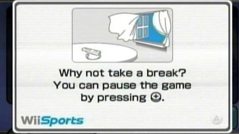

Hide Timer
What if a website showed you how much time you'd spent browsing it?
2nd January, 2022
The economy of the web is based on attention. The more time spent on a site, the more adverts shown, the more revenue earned.
If time is so valuable, shouldn't we be considerate of how much time our visitors spend viewing our site? Perhaps we should remind our visitors to take a break now and again, similar to Wii Sports.
According to NintendoLife, this message was added by Nintendo's CEO, Satoru Iwata, after being inspired by Earthbound's "Two-hour Dad".
Your dad calls you when you play for over two hours straight. He says, "Don't you think you should take a break now?" - Yasuhiro Nagata
Other games that tell players to take a break can be found on Giantbomb. This community sourced list has 23 titles, about half of which are produced by Nintendo. One web-based game amongst these titles is Cookie Clicker, so it's good to know a considerate web developer has already implemented this idea.
I am astonished that YouTube never prompts the user to take a break, even when some addicted users have used their platform up to 18 hours a day. Did YouTube's data scientists notice these outliers? If so, how did they justify letting these users spend this much time on their platform?
Thankfully, some time management tools have now been built into the YouTube app, helping proactive users manage time with daily limits and bedtime reminders. Sadly, these tools haven't been added to the YouTube website; perhaps the developers simply haven't found the time for this yet.
How much would it impact YouTube's bottom line if they showed a message after two hours suggesting a break? How much could this nudge encourage users, especially those who care about how much time they spend online, to develop healthy internet habits?
The participant attempts to relax, watching videos or scrolling through social media, while half their screen is filled with a timer progressively getting larger. A ticking sound plays in the background. An important question to contemplate: "Is this artwork really worth my time?" Browser Extension
After two hours, the net art website you're viewing automatically redirects you to support materials for internet addiction; it also remembers that you are barred and kicks you out when you try to visit the website again. Website
I think there should be a balance between being aware of time and being distracted by a timer. In any case, I've provided the option to show / hide this site's timer, so we are reminded to value our time, but we can choose how much to get stressed out about it.
A timer that shows each second implies each second must be useful; this, combined with our cultural ideals surrounding productivity and effective use of time, makes for an effective background anxiety generator.
Online, we are used to recieving information and stories as quickly as possible. A second-by-second timer might fit quite well on social media sites, especially TikTok and other infinite scrollers. In this website however, the timer challenges you to remain invested in what you are reading; all the while, precious seconds are ticking away.